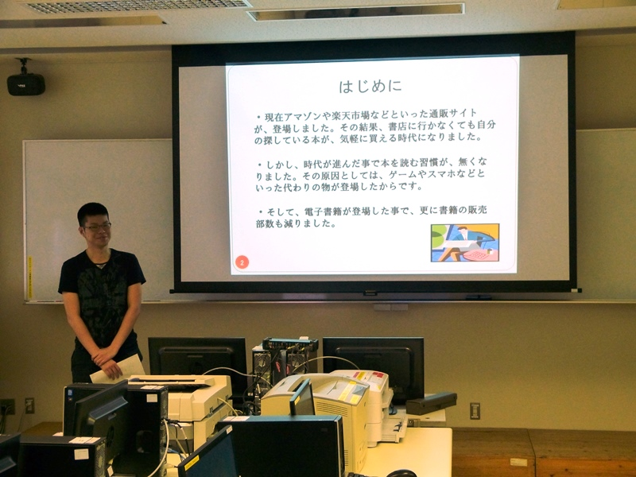
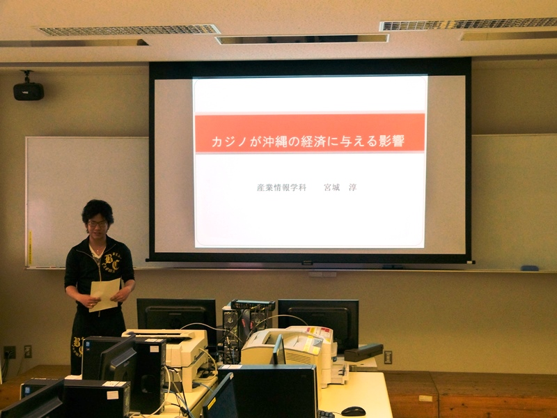
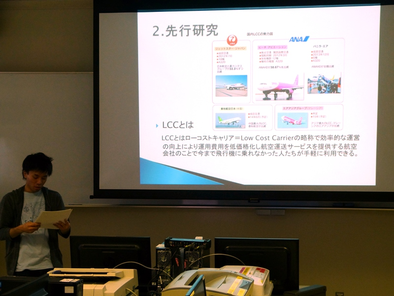

田口ゼミ
田口 順等（たぐち のぶひと）准教授
専門分野／経済統計学・観光経済学
担当科目／データ解析論Ⅰ・Ⅱ、産業連関論など
池原 司
私は、「今後出版業界は、どうなるか？」について研究しております。電子書籍などの影響で、年々発行部数が減少傾向に陥っています。これらを相手に、詳しく具体的に説明する為に情報収集分析し、具体的な根拠を調べています。これら情報収集分析スキルは、社会に出てもすぐに役立ちたい為に、現在スキルを磨いています。
卒論のアドバイスや就職の模擬面接など面倒みの良い先生です。就職の対策や統計について学んでみたいという方には、是非お勧めします。
宮城 淳
産業情報学科は、コンピュータを使ってプログラミングやアプリ作成をする情報システムコースだけではなく、経済や産業分野の知識を学ぶ経済情報コースでも学ぶことができるので、色んなことを幅広く学んでみたいという人に向いていると思います。
私の所属する田口ゼミ（経済情報コース）では経済や産業の統計・データを分析することで、すぐにはわかりづらいデータを、わかりやすく理解することを目的としています。これを学ぶことで、今の経済や産業の現状とその将来を知ることができるようになります。
卒業論文では、「カジノが沖縄に与える影響」をテーマに論文や本を読み、メリットやデメリットなどを調査し研究を進めています。この研究で物事には両面が存在し、その本質や問題点を見つけて解決する能力が養われてきたと感じています。
ゼミは、就職活動や卒業論文など、一人一人向かっている道は違いますが、皆で団結し、助け合いながら、楽しく過ごしています。先生も各生徒に親身になって様々なアドバイスをしてくれるので、勉強ではわからないことも学ぶことができ、とても充実しています。
山口 賢優
田口ゼミでは統計やデータをつかって経済や産業についてわかりやすく理解するために相関係数、クロス集計表といったデータ分析について学び、それらを用いて卒業研究を行っています。
私は、近年注目されているLCC（格安航空会社）を卒業論文のテーマにして研究を行っています。日本にLCCが登場した背景や過去の制度、LCCの先駆けとなった航空会社について調べ、さらに今までの利用率や利用者のアンケートデータなどを基に利点や問題点を整理し、今後LCC利用者が増えるためにどうすれば良いのかを分析・研究しています。
私の卒論研究を進めるにあたって論文の書き方やデータ分析の手法がたいへん役に立っています。また先生との面談で卒業論文のまとめ方などをアドバイスしてもらっています。卒業論文は自分の好きなことについて研究できるのでとても良いゼミだと思います。